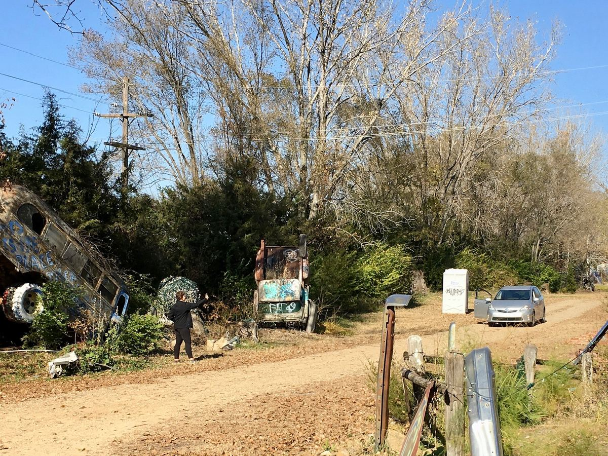
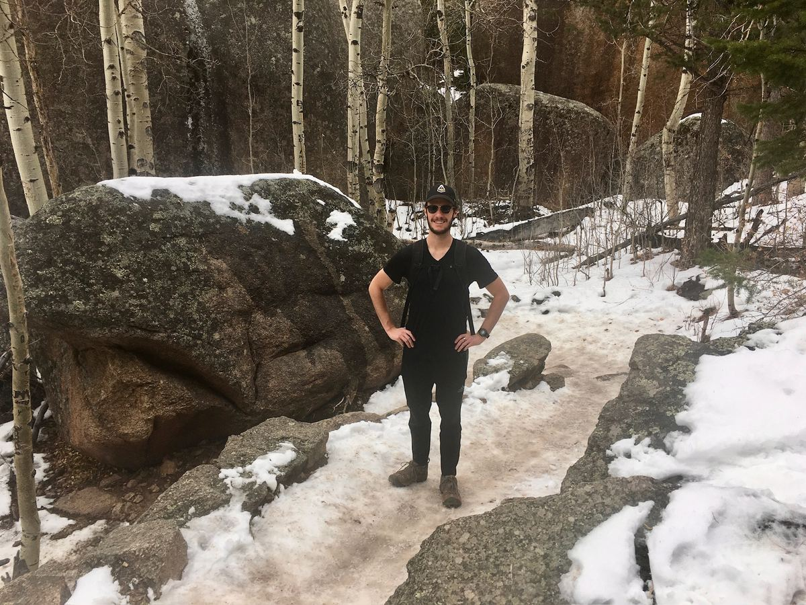
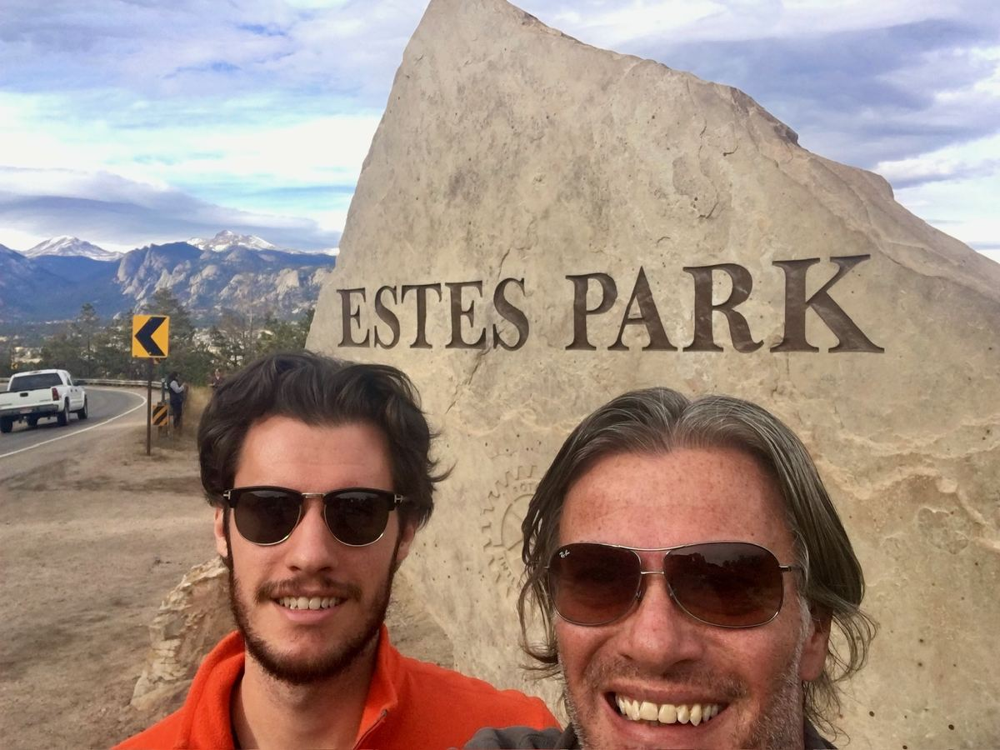
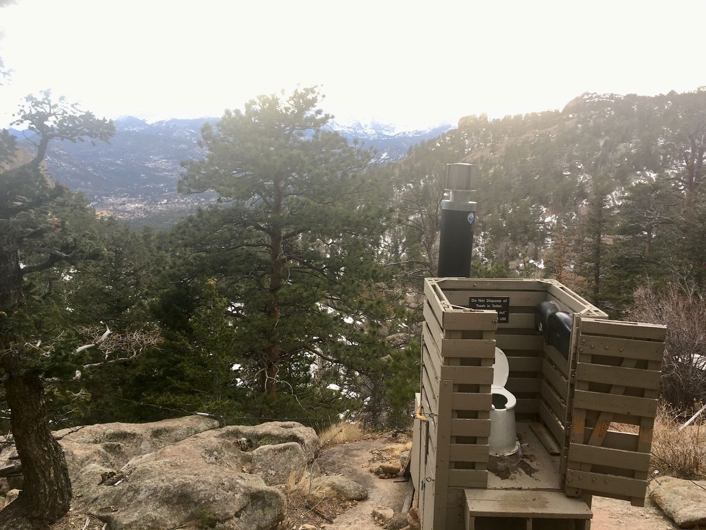
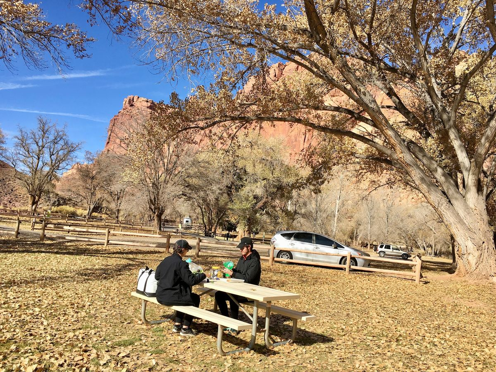
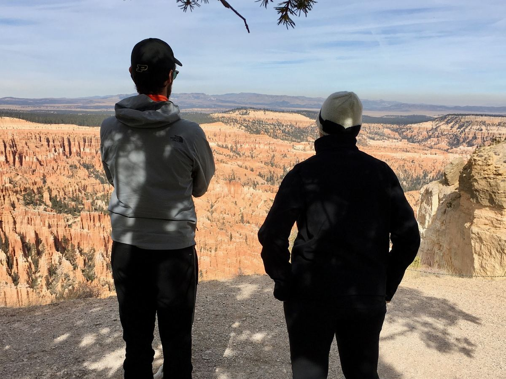
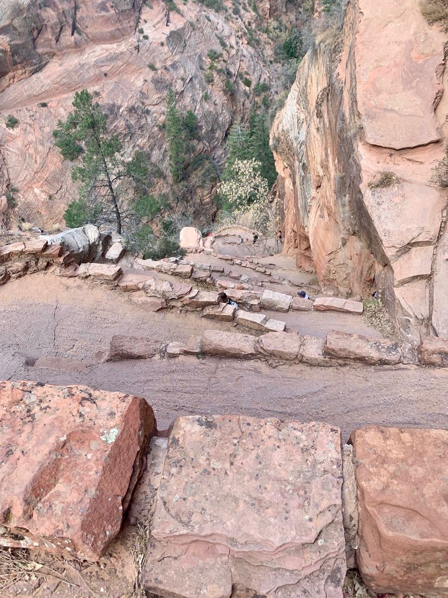
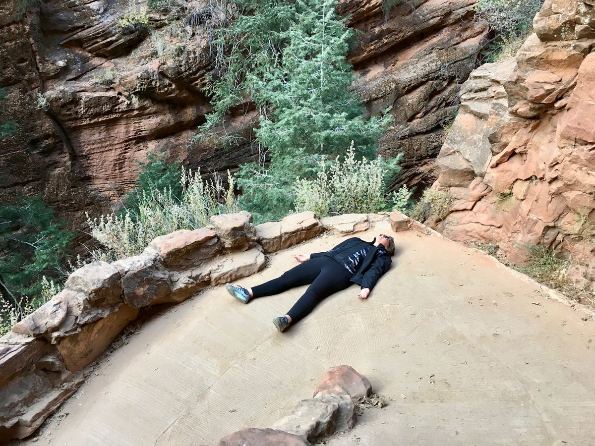
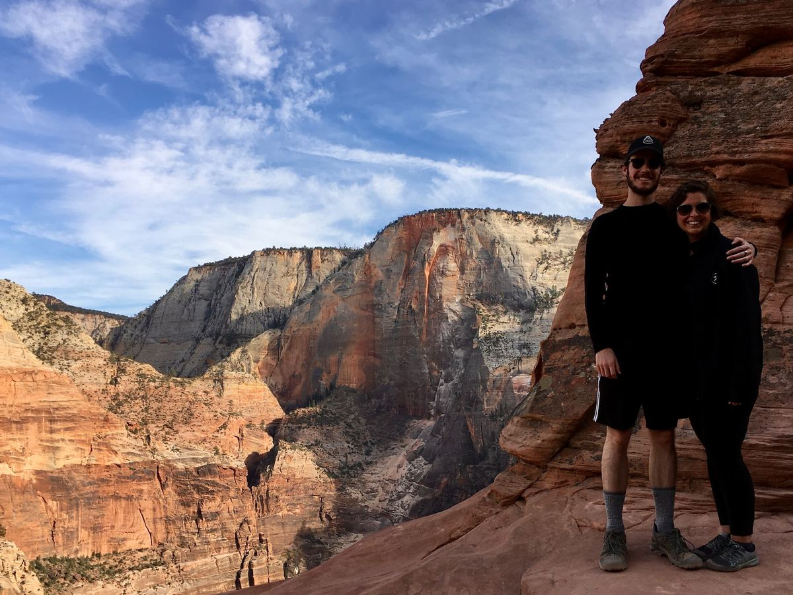
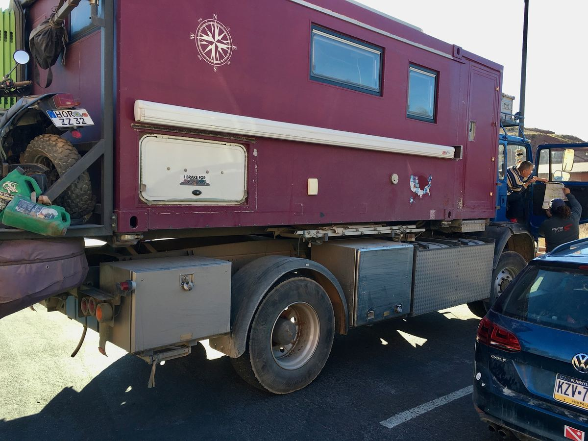

In November 2019, our son Spencer had some time off and wanted to visit Utah’s national parks. We knew Arches and Zion existed, but our experience with Utah was limited to work trips in Salt Lake City. Spencer imagined a one-way journey from Denver to Las Vegas, visiting the parks along the way. We decided to drive our Prius V from Cincinnati to meet him in Denver.
Why drive instead of fly? Just for fun.

The Prius had already taken us to Miami, Chicago and Dallas. We knew it was comfortable, remarkably efficient and capable of covering long distances without drama. Driving also meant the trip did not have to begin in Denver or end in Las Vegas. We could make the journey part of the adventure.
A family emergency altered our original plans, but we still met Spencer in Denver. Before turning west, we made a quick trip toward Estes Park and hiked a mile or two toward Gem Lake. There was snow on the trail, and the landscape already felt far removed from home.


Near Estes, we encountered elk standing in a residential neighborhood. They seemed enormous beside the Prius. A family pulled into its driveway, and children wearing backpacks ran inside after school. The elk never moved. The children paid them no attention. To them, this was apparently an ordinary afternoon. To us, it was evidence that we had entered a different world.

I also photographed my first national-park wilderness toilet. At the time, even that felt adventurous enough to document.
We drove west on Interstate 70 to Moab and began our Utah journey at Arches National Park. We hiked to Delicate Arch in unexpectedly hot conditions. The trail was difficult, and near the end we crossed an exposed, narrow ledge. By that point we were already tired, and the final approach felt intense.
Cassie was still physically recovering from cancer treatments. We might not have completed the hike if Spencer had not been there encouraging us forward. When we finally reached Delicate Arch, the three of us stood beneath it for a photograph. The scale of the place was almost impossible to absorb. The view felt earned in a way that views from beaches, skyscrapers and airplane windows never had.

Because the family emergency had cost us time, we skipped Canyonlands. It was an early lesson that has stayed with us: travel plans need room for fatigue, changing circumstances and difficult choices.
From Moab, we continued through Capitol Reef, Bryce Canyon and Zion. Our system was simple. The Prius gave us comfortable seats, efficient transportation and enough storage for luggage, a cooler and a snack bag. We ate packed lunches or stopped at local restaurants. We slept in Airbnbs and small hotels. There was no cooking or sleeping outdoors and no elaborate camp setup.
We usually made reservations only a day ahead. Each evening, we finalized the following day’s plan and kept backup ideas ready in case we were too tired for the ambitious version. The only absolute deadline was Spencer’s flight from Las Vegas.

Capitol Reef introduced us to a nearly vegetationless, lunar landscape unlike anything we had seen before. Cassie and Spencer found parts of it boring. I loved it. That attraction to stark, empty places has only grown; Death Valley later became one of our favorite parks, and the Great Basin still calls to us.
At Bryce Canyon, Cassie and Spencer enjoyed the overlook while I tried to manage my fear of the height. Parts of Glen Canyon passed mainly through the windshield, but even from the road, the scenery felt like driving magic.

Zion gave us the trip’s other defining hike. We climbed the famous switchbacks toward Scout Lookout. It was punishing for all three of us and especially difficult for Cassie. Photographs from the trail show the switchbacks stacked above one another and Cassie taking a thoroughly deserved rest.


Once again, reaching the goal rewarded us beyond anything we had imagined. Zion also changed how we understood canyon landscapes. At the Grand Canyon, the familiar experience begins at the rim, looking down. At Zion, we began on the canyon floor and looked upward. To reach the great views, we had to climb.

Throughout Utah, I began photographing overland vans and expedition trucks. We rarely saw vehicles like them east of the Mississippi, but in Utah they seemed to be everywhere. Because we already understood tiny living from time spent on a boat, sleeping and eating in a small space did not seem impossible. The overlanding concept—the idea of using a vehicle to live far beyond the pavement—was completely new.
Still, those photographs were not evidence of a plan. Cassie and Spencer thought the rigs were fun to see, just as we might photograph an exotic sports car in Florida. I was the one quietly dreaming about an old, high-mileage or self-built van we might someday afford.
By the time we dropped Spencer at the Las Vegas airport, we were probably hooked, although we did not yet know it. The Prius was nearly perfect on the road, but staying near national parks could be expensive, especially where lodging was limited. After Las Vegas, we continued mostly along Interstate 10 toward Florida. We passed through El Paso, encountered Border Patrol checkpoints and learned just how empty long sections of I-10 could be. Those observations became useful on later journeys.
Then COVID arrived while we were in Florida, and travel stopped.
When we eventually tried again, it was in a Chrysler Town & Country minivan with a full-size bed in the back. Because the Prius trip had taught us to travel with almost nothing, the minivan felt enormous. We rarely missed having refrigeration or a toilet because we had never learned to depend on them.
Today, our Sprinter carries our bed, food, toilet and cold drinks into places where we can stay off-grid for days. Every fuel bill reminds us what that comfort costs. The Prius gave us the opposite experience: enormous freedom with very little baggage and almost no fuel expense.
What felt daring in 2019 now looks, from a distance, like the first small step. We thought we were taking a trip through Utah. We were actually learning how we wanted to travel.